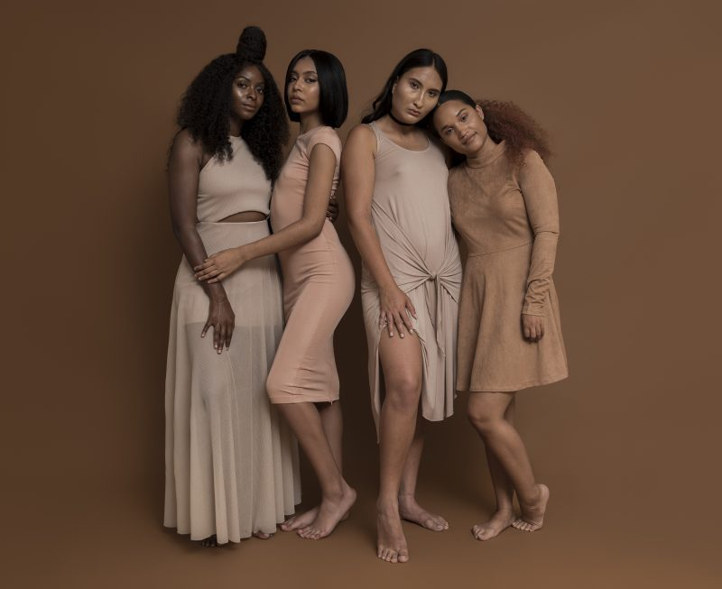
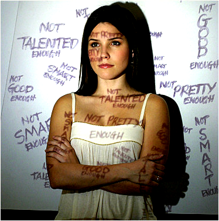
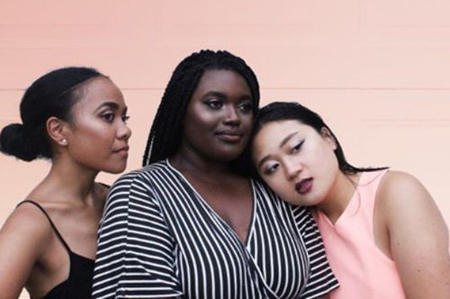
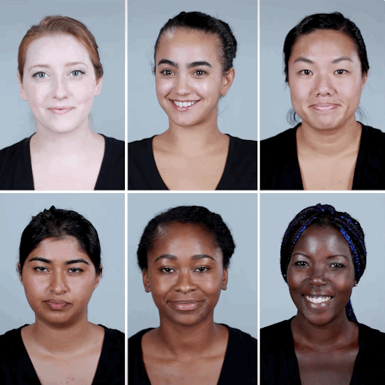

The hue of you is based off of women of a particular color and how they may have very low confidence because of the color of their skin.

I also use this to stop the stereotypes that women get on a daily basis. They get stereotyped for their color, their body, and so much more to the point they start to bully themselves and have so much hatred built up inside and that can lead to many things such as suicide for a prime example.

We want our women in this world to feel good about themselves and not feel ashamed because of their appearance or the color of their skin. We are all equal and that's how we should be treated in this world. We should never feel discouraged based off of what other people say and it shouldn't affect us in any shape or form. Women of color should not feel any certain way just because they are of a diffrent hue, we are each beautiful in our way and we should believe that.

On my behalf of being a young woman of color, I know that life isn't easy because you can look at it and tell but I want to be one of the young women to bring enlightenment towards others who don't have the courage they need to get in order to feel better and have the presentability to go out in the world and show off.
In conclusion, I want the world full of beautiful women to feel confident in themselves and not feel discouraged about the way they look or how they may appear out in the world. The message that should be sent shouldn't be full of hatred, it should be filled with good and positive things that can make women and young girls to feel confident and feel comfortable in their own skin.

Click me